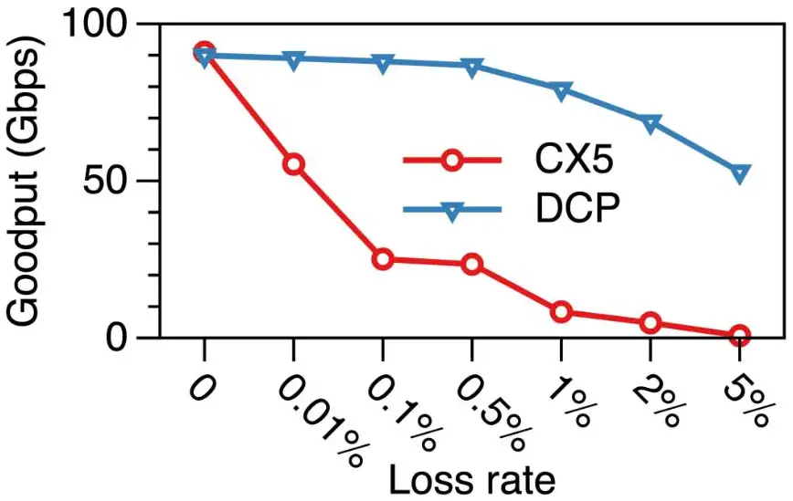

Transport: RDMA over Ethernet, lossless networks and congestion control傳輸層：Ethernet 上的 RDMA、無損網路與壅塞控制
Learn what an RDMA packet looks like on Ethernet, why its loss recovery makes training networks avoid dropping packets, how pause frames (PFC) and congestion signals (ECN, DCQCN) work and fail, why the production AI networks departed from the textbook recipe, and what comes after it.了解 RDMA 封包在 Ethernet 上的樣子、為何它的丟包恢復方式讓訓練網路盡量不丟包、暫停幀（PFC）與壅塞訊號（ECN、DCQCN）如何運作與失效、生產環境的 AI 網路為何偏離教科書做法，以及接下來的發展。
This chapter builds on Chapters 2, 4, 5, 6. These earlier terms appear most often below; each chip links to its definition.
本章建立在第 2、4、5、6 章之上。下列較早定義的名詞在本章最常出現；點選即可回到它的定義。
New terms in this chapter (13)本章新名詞（13）
Each term is defined in the text where it first appears; the link jumps there. Terms from earlier chapters are listed under "Before you start".
每個名詞都在它第一次出現的段落中定義，點連結可跳過去。前面各章的名詞列在「開始之前」。
- RoCEv2RoCEv2 RDMA over Converged Ethernet: RDMA packets carried inside UDP/IP so that ordinary Ethernet switches can forward them. 融合乙太網路上的 RDMA：把 RDMA 封包包在 UDP/IP 內，讓一般 Ethernet 交換器可以轉送。
- Lossless network無損網路 A network whose switches pause senders instead of dropping packets when a buffer fills. 緩衝區滿時，交換器會暫停傳送端而不丟封包的網路。
- PFCPFC Priority flow control: a switch port sends PAUSE upstream before its buffer overflows, per traffic class. 優先權流量控制（PFC）：交換器埠在緩衝區溢位前，依流量類別向上游送出 PAUSE。
- DCQCNDCQCN The standard RoCE congestion control: ECN marks at the switch, CNPs from the receiver, rate cuts at the sender NIC. RoCE 的標準壅塞控制：交換器做 ECN 標記、接收端回 CNP、傳送端 NIC 降速。
- Memory registration, MTT記憶體註冊、MTT Before RDMA, a buffer is registered: pinned, and its address map loaded into the NIC's memory translation table (MTT). RDMA 前必須註冊緩衝區：鎖定記憶體，並把位址對應載入 NIC 的記憶體轉換表（MTT）。
- Packet sequence number (PSN)封包序號（PSN） The number in each RDMA packet that loss recovery uses to find gaps. 每個 RDMA 封包中的編號，遺失恢復用它找出缺口。
- Goodput有效吞吐（goodput） Useful data delivered per second, after resent and wasted bytes are removed. 扣掉重送與浪費的位元組後，每秒交付的有用資料量。
- Congestion spreading, victim flow壅塞擴散、受害者流 PFC side effects: pauses spread upstream hop by hop and slow flows that cross no congested link. PFC 的副作用：暫停逐跳往上游擴散，拖慢沒經過壅塞鏈路的流。
- Headroom預留空間（headroom） Buffer reserved for the bytes that still arrive after a PAUSE has been sent. 為送出 PAUSE 後仍會抵達的位元組所保留的緩衝空間。
- ECN, CNPECN、CNP Explicit congestion notification: a switch marks packets when its queue grows; the receiver returns a congestion notification packet (CNP). 明確壅塞通知：佇列增長時交換器標記封包；接收端回傳壅塞通知封包（CNP）。
- IncastIncast（多對一匯聚） Many senders converge on one receiver at once, so one port receives more than it can drain. 許多傳送端同時匯聚到一個接收端，一個埠收到的超過它能送出的。
- Ultra EthernetUltra Ethernet An industry transport specification (1.0 in 2025) that sprays packets and retransmits selectively. 業界傳輸規格（2025 年 1.0 版），會噴灑封包並做選擇性重傳。
- BDP-FCBDP-FC IRN's cap of one BDP of unacknowledged bytes per queue pair, enforced in the NIC. IRN 在 NIC 內施加的上限：每個佇列對最多一個 BDP 的未確認位元組。
7.1RDMA over EthernetEthernet 上的 RDMA
Normal networking copies data through the operating system. At 400 Gb/s that would use every CPU core. RDMA (remote direct memory access) lets the NIC read and write application memory directly. With GPUDirect, the NIC reads GPU memory and writes into the remote GPU's memory. The CPU only posts a request and later sees a completion. The request is a work queue element on a queue pair, which is the RDMA name for a connection.
一般網路的資料要經過作業系統複製。在 400 Gb/s 下，這會吃光所有 CPU 核心。RDMA（遠端直接記憶體存取）讓 NIC 直接讀寫應用程式的記憶體。配合 GPUDirect，NIC 直接讀 GPU 記憶體並寫到遠端 GPU 的記憶體。CPU 只需提交一個請求，稍後看到完成通知。請求是一個 queue pair（RDMA 對「連線」的稱呼）上的 work queue element。
RDMA was born on InfiniBand. RoCEv2 (RDMA over Converged Ethernet) puts the same RDMA packets inside UDP/IP, so they can cross ordinary Ethernet switches. Meta, Alibaba and ByteDance all chose RoCEv2 for their training clusters because it uses the same switches, tools and people as the rest of the data center. One RoCE detail matters a lot: the NIC retransmits with go-back-N. If one packet is lost, the NIC resends that packet and every packet after it. In one measurement a 0.1% loss rate cut a 100 Gb/s flow from about 90 to about 25 Gb/s (Section 7.2). So the network must not drop packets: it must be lossless. Ethernet switches achieve this with pause frames, priority flow control (PFC, Section 7.3), and a congestion-control algorithm, DCQCN (Section 7.4), slows senders down so that pauses are rarely needed.
RDMA 誕生於 InfiniBand。RoCEv2（RDMA over Converged Ethernet）把同樣的 RDMA 封包包進 UDP/IP，讓它們可以穿過一般的 Ethernet 交換器。Meta、Alibaba 與 ByteDance 都為訓練叢集選了 RoCEv2，因為它用的交換器、工具與人員和資料中心其他部分相同。RoCE 有一個細節影響很大：NIC 用 go-back-N 重傳。只要掉一個封包，NIC 會重送那個封包以及其後所有封包。在一次量測中，0.1% 的丟包率讓一條 100 Gb/s 的流從約 90 Gb/s 掉到約 25 Gb/s（第 7.2 節）。所以網路不能丟包：它必須是無損（lossless）的。Ethernet 交換器以暫停幀，即優先權流量控制（PFC，第 7.3 節）做到這點；另有壅塞控制演算法 DCQCN（第 7.4 節）讓發送端減速，使暫停很少需要發生。
What RoCEv2 puts on the wireRoCEv2 在線路上放了什麼
Mechanism. An RDMA transfer begins with a verb: the application posts a work request on a queue pair (QP), which is a send queue and a receive queue that together form one connection. Three families matter here. Send/receive needs the receiver to have posted a receive buffer first. RDMA write and read move data to or from a registered remote address without the remote CPU. Completions appear on a completion queue. NCCL uses RDMA write for data and a small send for control.
機制。一次 RDMA 傳輸從一個 verb 開始：應用程式在一個 queue pair（QP）上提交工作請求；QP 是一個發送佇列加一個接收佇列，合起來構成一條連線。這裡有三個家族要緊。Send/receive 需要接收端先提交一個接收緩衝區。RDMA write 與 read 把資料搬到或搬離已註冊的遠端位址，遠端 CPU 不參與。完成通知出現在 completion queue。NCCL 用 RDMA write 搬資料、用小的 send 做控制。
Before any of this, the application must register the memory it will use. Registration pins the pages and loads their mapping into the NIC's memory translation table (MTT). The NIC caches only a part of the MTT. In Microsoft's 2016 NICs the cache held 2K entries; with 4 KB pages that covers 8 MB of memory (Microsoft RoCE paper). A receiver with a larger working set misses constantly, stalls, fills its receive buffer and sends PAUSE frames. That is the slow receiver of Section 7.3; the fix was 2 MB pages. Figure 7.1 follows one RDMA write through the QP, the MTT and the completion queue.
在這一切之前，應用程式必須註冊它要用的記憶體。註冊會釘住分頁，並把對應載入 NIC 的記憶體轉換表（MTT）。NIC 只快取 MTT 的一部分。微軟 2016 年的 NIC 快取 2K 筆；用 4 KB 分頁只涵蓋 8 MB 記憶體（微軟 RoCE 論文）。工作集更大的接收端不斷失誤、停滯、填滿接收緩衝並送出 PAUSE 幀。這就是 第 7.3 節 的慢接收端；修法是 2 MB 分頁。圖 7.1 沿著 QP、MTT 與 completion queue 走過一次 RDMA write。
The packet封包
The packet. RoCEv2 wraps each RDMA packet in ordinary Ethernet, IP and UDP headers so that any IP router can forward it. The UDP destination port is fixed at 4791; the source port varies per QP so switches can hash on it. Inside UDP comes the base transport header (BTH, 12 bytes): the opcode (which verb, and whether this is the first, middle, last or only packet of a message), the 24-bit packet sequence number (PSN) that loss recovery depends on, and the 24-bit destination QP number that Meta's switches hash on. An RDMA write adds the RETH (16 bytes): the remote virtual address, the remote key that proves the sender may write there, and the message length. Then the payload, then a 4-byte ICRC and the Ethernet FCS. For a 4 KB payload the headers and trailers add about 78 bytes, under 2%. Figure 7.2 shows the fields in order.
封包。RoCEv2 把每個 RDMA 封包包進一般的 Ethernet、IP 與 UDP 標頭，讓任何 IP 路由器都能轉送它。UDP 目的埠固定為 4791；來源埠依 QP 變化，讓交換器可以對它做雜湊。UDP 之內是基本傳輸標頭（BTH，12 位元組）：opcode（哪個 verb，以及這是訊息的第一個、中間、最後一個或唯一的封包）、丟包恢復所依賴的 24 位元封包序號（PSN），以及 Meta 的交換器拿來雜湊的 24 位元目的 QP 編號。RDMA write 再加上 RETH（16 位元組）：遠端虛擬位址、證明發送端有權寫入的遠端金鑰，以及訊息長度。接著是載荷、4 位元組的 ICRC，然後是 Ethernet 的 FCS。4 KB 的載荷加上標頭與尾端約 78 位元組，不到 2%。圖 7.2 依序畫出這些欄位。
Why DSCP. PFC identifies a packet's class by the 3-bit PCP field in the VLAN tag, which failed in two ways on Microsoft's routed network. PXE-booting servers have no VLAN configuration yet, and no standard carries a VLAN priority across an IP subnet boundary. So Microsoft moved the priority into the 6-bit DSCP field of the IP header, mapping DSCP value to PFC priority . Every RoCE fabric since classifies on DSCP.
為何用 DSCP。PFC 以 VLAN 標籤中 3 位元的 PCP 欄位識別封包的類別，這在微軟的路由式網路上有兩個問題。以 PXE 開機的伺服器還沒有 VLAN 設定，而且沒有標準方法把 VLAN 優先權帶過 IP 子網邊界。於是微軟把優先權移到 IP 標頭的 6 位元 DSCP 欄位，把 DSCP 值 對應到 PFC 優先權 。此後每個 RoCE 網路都依 DSCP 分類。
Numbers. The RDMA MTU on current NICs is 4,096 bytes. A 4 KB payload is 32,768 bits; at 400 Gb/s it occupies the wire for 82 ns. A full 1 MB NCCL chunk is 256 such packets and leaves the NIC in 21 µs, which is about one data-center round trip (Meta measured 22 µs). So a sender can put an entire chunk into the network before any feedback returns. At 40 Gb/s in 2015 the same chunk took 210 µs, ten round trips; every "slow signal" problem in Section 7.4 and Section 7.5 comes from this tenfold change. Panel 7.1 computes these numbers for other link rates, MTUs, chunks and round trips.
數字。目前 NIC 的 RDMA MTU 是 4,096 位元組。4 KB 的載荷是 32,768 位元；在 400 Gb/s 下它占用線路 82 ns。一個完整的 1 MB NCCL chunk 是 256 個這樣的封包，21 µs 就離開 NIC，約等於一次資料中心往返（Meta 量到 22 µs）。所以發送端可以在任何回饋返回之前，把整個 chunk 放進網路。2015 年的 40 Gb/s 下，同樣的 chunk 要 210 µs，即十次往返；第 7.4 節 與 第 7.5 節 裡每一個「訊號太慢」的問題都來自這十倍的變化。面板 7.1 為其他鏈路速率、MTU、chunk 與往返時間計算這些數字。
The NIC's packet budgetNIC 的封包預算
Worked example: the packet budget. At 400 Gb/s with a 4 KB MTU, each packet carries 4,096 bytes of payload plus about 100 bytes of headers, about 33,600 bits. Divide: million packets per second, one every 84 ns. In those 84 ns the NIC must look up the QP state, translate the address through the MTT, move 4 KB over PCIe and update the sequence number. There is no time for a cache miss to memory, which is why the NIC's cache sizes, not its line rate, fail first.
實例：封包預算。在 400 Gb/s、4 KB MTU 下，每個封包有 4,096 位元組的載荷加上約 100 位元組的標頭，約 33,600 位元。除一下： 萬個封包／秒，每 84 ns 一個。在那 84 ns 內 NIC 必須查 QP 狀態、經 MTT 轉換位址、透過 PCIe 搬 4 KB 並更新序號。沒有時間容許一次到記憶體的快取失誤，這就是為什麼最先失敗的是 NIC 的快取大小，而不是它的線速。
Panel 7.2 recomputes this budget, and the cost of one loss, for other line rates, MTUs and round trips.
面板 7.2 對其他線速、MTU 與往返時間重算這份預算，以及一次丟包的代價。
7.2Loss recovery decides everything丟包恢復決定一切
Mechanism. When a packet is lost, what does the sender resend? The RDMA transport was designed for InfiniBand, whose links never drop packets, so its designers chose the simplest answer. The receiver accepts packets only in PSN order. A packet with an unexpected PSN is discarded and a NACK is returned. The sender can react in three ways.
機制。封包遺失時，發送端要重送什麼？RDMA 傳輸層是為 InfiniBand 設計的，那裡的鏈路從不丟包，所以設計者選了最簡單的答案。接收端只依 PSN 順序接受封包。PSN 不符預期的封包被丟棄並回送 NACK。發送端有三種反應方式。
- Go-back-0. Restart the whole message from its first packet. Microsoft's first NICs did this. Under a deterministic drop of one packet in 256, a message longer than 256 packets can never complete: every attempt hits a drop before the end. Goodput, the rate at which useful data is delivered, fell to zero while the link ran at full rate. This is a livelock.Go-back-0。從訊息的第一個封包重頭來。微軟最早的 NIC 就是這樣。在確定性地每 256 個封包丟 1 個之下，超過 256 個封包的訊息永遠無法完成：每次嘗試都會在結束前碰到一次丟包。鏈路全速運行，有效吞吐（goodput，有用資料被送達的速率）卻降到零。這是活鎖。
- Go-back-N. Restart from the first lost packet. This is what RoCE NICs do today. The waste per loss is every packet that was already in flight behind the lost one: up to one bandwidth-delay product (BDP), the link rate times the round-trip time. At 40 Gb/s and a 24 µs RTT that is 120 KB; at 400 Gb/s and 22 µs it is 1.1 MB, about 270 packets of 4 KB.Go-back-N。從第一個遺失的封包重新開始。今天的 RoCE NIC 就是這麼做。每次丟包浪費的是排在遺失封包後面、已經在途的所有封包：最多一個頻寬延遲乘積（BDP），即鏈路速率乘以往返時間。40 Gb/s、24 µs RTT 時是 120 KB；400 Gb/s、22 µs 時是 1.1 MB，約 270 個 4 KB 封包。
- Selective retransmission. The receiver keeps packets that arrive out of order, after a later one, and tells the sender exactly which PSN is missing. The sender tracks acknowledgments in a bitmap and resends only the gaps. One loss costs one packet. IRN's example: packets 1–10 are sent and packet 3 is lost; go-back-N resends 8 packets, IRN resends 1 (IRN paper).選擇性重傳。接收端保留亂序（比後面的封包還晚到）的封包，並精確告訴發送端缺了哪個 PSN。發送端用位圖追蹤確認，只重送缺口。一次丟包只花一個封包。IRN 的例子：送出封包 1–10、封包 3 遺失；go-back-N 重送 8 個，IRN 重送 1 個（IRN 論文）。
Figure 7.3 applies the three rules to IRN's example.
圖 7.3 把這三種規則套用到 IRN 的例子。
Animation 7.1 plays IRN's example step by step under go-back-N and under selective retransmission; you choose which packet is lost.
動畫 7.1 逐步播放 IRN 的例子，分別在 go-back-N 與選擇性重傳之下；你可以選擇哪個封包遺失。
Why the loss rate matters so much. Write for the probability that a packet is lost and for the BDP in packets. Under go-back-N each loss wastes about packets of link time, so the fraction of useful packets is roughly
為何丟包率如此重要。令 為一個封包遺失的機率、 為以封包計的 BDP。在 go-back-N 下每次丟包浪費約 個封包的鏈路時間，所以有用封包的比例大約是
This approximation ignores NACK waiting time and treats losses as independent, but it shows the cliff. With , at and at ; at 400 Gb/s with the same 1% loss gives . Under selective retransmission . Under go-back-0 a message of packets completes only if none is lost, with probability : for and , and exactly zero under the deterministic 1-in-256 drop for any . Figure 7.4 shows the same cliff measured on a go-back-N NIC.
這個近似忽略等待 NACK 的時間、並把丟包視為獨立事件，但足以看出懸崖。 時， 給 、 給 ；400 Gb/s、 時，同樣 1% 的丟包給出 。在選擇性重傳下 。在 go-back-0 下， 個封包的訊息只有一個都不丟時才完成，機率是 ：、 時是 ，而在確定性的每 256 丟 1 下，任何 都正好是零。圖 7.4 是在 go-back-N NIC 上量到的同一個懸崖。

Two timeouts. A tail loss produces no NACK, because no later packet arrives, so the sender also needs a timer. IRN uses two timers. , about 320 µs in their setup (the longest RTT with one congested link), applies in general. , 100 µs, applies only when three or fewer packets are in flight. ByteDance's MegaScale tuned NCCL's retransmit timer and retry count so that a link flap of a few seconds does not kill a job, and enabled the NIC's adaptive retransmission for shorter retry intervals (MegaScale).
兩個逾時。尾端的丟包不會產生 NACK，因為沒有後到的封包，所以發送端還需要一個計時器。IRN 用兩個計時器。（他們的設定約 320 µs，即有一條壅塞鏈路時的最長 RTT）一般適用。（100 µs）只在在途封包三個以下時適用。字節跳動的 MegaScale 調校 NCCL 的重傳計時器與重試次數，讓幾秒的鏈路抖動不會殺死任務，並啟用 NIC 的自適應重傳以縮短重試間隔（MegaScale）。
Why "lossless" was a NIC property, not a law. A network that drops 0.1% of packets is harmless to a selective-retransmission NIC and costly to a go-back-N NIC. The lossless requirement therefore belongs to the NIC's recovery algorithm, not to RDMA or Ethernet. IRN put it this way: "the need for PFC is an artifact of current RoCE NIC designs rather than a fundamental requirement." Section 7.3 and Section 7.4 are the cost of that artifact; Section 7.6 is what happens once it is removed.
為何「無損」是 NIC 的性質，不是定律。丟 0.1% 封包的網路對選擇性重傳的 NIC 無害，對 go-back-N 的 NIC 卻代價高昂。因此無損需求屬於 NIC 的恢復演算法，不屬於 RDMA 或 Ethernet。IRN 這樣說：「對 PFC 的需求是當前 RoCE NIC 設計的產物，而非根本要求。」第 7.3 節 與 第 7.4 節 是這個產物的代價；第 7.6 節 是把它移除之後會發生的事。
A 400G fabric drops one packet in . Set the panel to 400G, 22 µs, 4 KB: how much goodput does go-back-N keep, and selective retransmission? Is "lossless"? For a go-back-N NIC, no; that difference is the argument of Section 7.6.
一個 400G 網路每 個封包丟一個。把面板設為 400G、22 µs、4 KB：go-back-N 保住多少 goodput？選擇性重傳呢？ 算「無損」嗎？對 go-back-N 的 NIC 不算；這個差別就是 第 7.6 節 的論證。
7.3Lossless Ethernet: priority flow control無損 Ethernet：優先權流量控制
A switch port has a buffer. When packets arrive faster than they leave, the buffer fills. A normal switch drops the overflow. A lossless switch instead sends a PAUSE frame upstream before the buffer is full. This is PFC (priority flow control). The upstream port stops sending on that priority until it receives a resume. PFC works, but it has side effects. The pause spreads backward hop by hop (congestion spreading), a paused port blocks flows that were not causing the congestion (head-of-line blocking), and in rare cases a cycle of pauses can deadlock the network. Microsoft's 2016 paper on RDMA at scale is the classic account of these failures.
交換器的每個埠都有緩衝區。封包進得比出得快，緩衝區就會滿。一般交換器會把溢出的丟掉；無損交換器則在緩衝區滿之前向上游送出 PAUSE 幀。這就是 PFC（優先權流量控制）。上游埠會停止在該優先權上發送，直到收到恢復通知。PFC 有效，但有副作用。暫停會一跳一跳往回蔓延（壅塞擴散），被暫停的埠會擋住與壅塞無關的流（隊頭阻塞），極端情況下暫停形成循環還會讓網路死鎖。Microsoft 2016 年關於大規模 RDMA 的論文是這些失效的經典記錄。
Mechanism. Priority flow control (IEEE 802.1Qbb) works on one link. Each port keeps an ingress counter per priority class; when a class's counter passes the pause threshold , the port sends a PAUSE naming that class and the upstream port stops sending it. A RESUME follows when the counter falls below a lower threshold. The frame never travels more than one hop, but congestion spreads anyway: the paused upstream port's own buffer fills and it pauses its upstream, hop by hop.
機制。優先權流量控制（IEEE 802.1Qbb）在一條鏈路上運作。每個埠為每個優先權類別維護一個入口計數器；某類別的計數器超過暫停門檻 時，該埠送出指名該類別的 PAUSE，上游埠停止發送該類別。計數器降到較低門檻之下時送出 RESUME。這個幀永遠只走一跳，但壅塞仍然會擴散：被暫停的上游埠自己的緩衝填滿、再暫停它的上游，一跳一跳往回蔓延。
Headroom. A PAUSE does not stop traffic instantly. The frame must wait for the packet leaving the port, cross the cable, and be processed upstream, and all bytes sent meanwhile still arrive. The buffer reserved for them is the headroom, and a reasonable estimate is
Headroom。PAUSE 不會立刻停住流量。這個幀必須等待正在離開該埠的封包、穿過線纜、再由上游處理，而這段期間送出的所有位元組仍會到達。為它們保留的緩衝就是 headroom，一個合理的估計是
with one MTU in progress at each end, the link rate times the round-trip propagation delay over a cable of length (, 5 ns per meter), and a reaction allowance . For the DCQCN authors' switch, a 32-port 40 Gb/s Broadcom Trident II with a 12 MB shared buffer, 300 m cables and a 1,500-byte MTU, the headroom is about 22.4 KB per port per priority (DCQCN paper); our formula reproduces that figure with . At 400 Gb/s the cable term is ten times larger, and with two 4 KB MTUs the headroom is about 100 KB per port per priority with 100 m fibers, about 200 KB with 300 m. On a 64-port switch with two lossless classes that is 12.8 MB, the whole buffer of the 2015 switch. Figure 7.5 shows where each term of the formula comes from.
其中每端各一個正在傳送的 MTU，鏈路速率 乘以長度 線纜的往返傳播延遲（，每公尺 5 ns），再加上反應餘裕 。對 DCQCN 作者的交換器——32 埠 40 Gb/s 的 Broadcom Trident II、12 MB 共享緩衝、300 m 線纜、1,500 位元組 MTU——headroom 約為每埠每優先權 22.4 KB（DCQCN 論文）；我們的公式以 重現這個數字。400 Gb/s 時線纜那一項大十倍，加上兩個 4 KB 的 MTU，headroom 約為100 m 光纖下每埠每優先權 100 KB、300 m 下約 200 KB。一台 64 埠交換器、兩個無損類別，就是 12.8 MB——2015 年那台交換器的全部緩衝。圖 7.5 畫出公式中每一項的來源。
The PFC threshold. Headroom is reserved for every lossless class on every port ; the rest of the shared buffer is what ingress counters may fill before pausing. Shared equally,
PFC 門檻。Headroom 為每個埠 的每個無損類別 保留；共享緩衝 剩下的部分才是入口計數器在暫停前可以填的空間。均分之下，
For the Trident II (12 MB of shared buffer, 32 ports, 22.4 KB of headroom per port per priority), eight lossless priorities against two:
對 Trident II（12 MB 共享緩衝、32 埠、每埠每優先權 22.4 KB 的 headroom），比較八個與兩個無損優先權，逐列計算如下：
| Question問題 | Calculation算式 | Result結果 |
|---|---|---|
| Static , all eight priorities lossless (, )靜態 ，八個優先權全部無損（、） | KBunder three 9 KB jumbo frames不到三個 9 KB 的 jumbo 幀 | |
| Static , two lossless priorities ()靜態 ，兩個無損優先權（） | KB |
With all eight classes lossless, each class gets less than three jumbo frames per port, which is why Microsoft made only two of the eight classes lossless; with two, the static threshold is about 165 KB. Real switches use a dynamic threshold instead: a port may fill until its ingress counter exceeds the free buffer divided by a parameter ( on that switch), so one hot port can use far more than its static share; Panel 7.4 uses that rule, which also bounds the threshold for ECN marking, the earlier congestion signal of Section 7.4.
八個類別全部無損時，每類別每埠不到三個 jumbo 幀，所以微軟只把八個類別中的兩個設為無損；兩個時靜態門檻約 165 KB。真實交換器改用動態門檻：一個埠可以一直填，直到入口計數器超過剩餘空閒緩衝除以參數 （那台交換器 ），所以一個熱埠可以用遠超過靜態份額的空間；面板 7.4 使用這條規則，它也限制了 第 7.4 節 那個更早的壅塞訊號——ECN 標記——的門檻。
The four pathologies. Microsoft's 2016 paper catalogues what PFC does to a production network; the DCQCN paper adds two failures that are properties of pausing whole ports.
四種病症。微軟 2016 年的論文記錄了 PFC 對生產網路做的事；DCQCN 論文再加上兩種源自暫停整個埠的固有失效。
| Failure | 失效 | Trigger and mechanism | 觸發與機制 | Fix and number | 修法與數字 |
|---|---|---|---|---|---|
| Livelock活鎖 | 1-in-256 drop; go-back-0 restarts the message, so long messages never finish | 每 256 丟 1；go-back-0 重頭傳訊息，長訊息永遠無法完成 | Go-back-N in the NIC; waste per loss bounded by | NIC 改用 go-back-N；每次丟包的浪費以 為界 | |
| Deadlock死鎖 | Dead server: ARP alive (4 h), MAC expired (5 min); the switch floods lossless packets out every port, closing a pause cycle across two ToRs and two leaves | 伺服器死亡：ARP 仍在（4 小時）、MAC 已過期（5 分鐘）；交換器把無損封包氾濫到每個埠，在兩台 ToR 與兩台 leaf 之間形成暫停迴圈 | Drop lossless packets with incomplete ARP; never put broadcast or multicast in a lossless class | 丟棄 ARP 不完整的無損封包；永不把廣播或多播放進無損類別 | |
| Pause storm暫停風暴 | One NIC's receive pipeline stalls and pauses its ToR forever; the ToR pauses its leaves; thousands of servers freeze | 一張 NIC 的接收管線停滯；它永遠暫停它的 ToR，ToR 再暫停 leaf；數千台伺服器凍結 | Watchdogs, timers that detect a stuck part and act: NIC stops pausing after a 100 ms stall; ToR drops the port's lossless traffic, re-enabling 200 ms after pauses stop | Watchdog（偵測元件卡住並採取動作的計時器）：NIC 停滯 100 ms 後停止暫停；ToR 丟棄該埠的無損流量，暫停停止 200 ms 後恢復 | |
| Slow receiver慢接收端 | MTT cache of 2K × 4 KB pages covers 8 MB; a bigger working set misses, stalls, and pauses everyone upstream | 2K × 4 KB 分頁的 MTT 快取只涵蓋 8 MB；更大的工作集失誤、停滯，並暫停所有上游 | 2 MB pages (512× coverage); dynamic buffer sharing so one slow port cannot eat others' headroom | 2 MB 分頁（涵蓋 512 倍）；動態緩衝共享讓一個慢埠吃不掉別人的 headroom | |
| Unfairness (parking lot)不公平（停車場） | Four senders into one receiver: H4 has its own ingress port, H1–H3 share one; pausing is per port, so H4's minimum (up to 20 Gb/s) exceeded the others' maximum | 四個發送端送往一個接收端：H4 獨占一個入口埠，H1–H3 共用一個；暫停以埠為單位，所以 H4 的最低值（最高達 20 Gb/s）超過其他三者的最高值 | Per-flow rate control (DCQCN) restores equal shares | 逐流速率控制（DCQCN）恢復均等份額 | |
| Victim flows受害者流 | A flow sharing no congested link fell from 20 to 10 to 4.5 Gb/s as pauses from an incast (many senders to one receiver) elsewhere cascaded through a switch on its path | 一條不共用任何壅塞鏈路的流，因別處 incast（多個發送端同時送往一個接收端）的暫停串聯到它路徑上的交換器，從 20 掉到 10、再到 4.5 Gb/s | Keep PFC rare: congestion control, deep buffers, or bytes-in-flight caps | 讓 PFC 罕見：壅塞控制、深緩衝或在途位元組上限 |
Figure 7.6 traces the last row: how a pause reaches a flow that crosses no congested link.
圖 7.6 追蹤最後一列：暫停如何傳到一條不經過任何壅塞鏈路的流。
Animation 7.2 plays Figure 7.6 in order: the pause moves upstream one hop at a time until it reaches the victim flow.
動畫 7.2 依序播放圖 7.6：暫停一次往上游走一跳，直到碰上受害流。
Worked example. A 64-port 400G leaf has a 64 MB shared buffer, 100 m fibers, a 4 KB MTU and two lossless classes. A 400G link moves 50 KB per µs, and 100 m of fiber is a 1.0 µs round trip. The arithmetic, one question per row:
實例。一台 64 埠 400G 的 leaf：64 MB 共享緩衝、100 m 光纖、4 KB MTU、兩個無損類別。400G 鏈路每 µs 搬 50 KB，100 m 光纖的往返是 1.0 µs。逐列計算如下：
| Question問題 | Calculation算式 | Result結果 |
|---|---|---|
| Headroom per port per priority: two 4 KB MTUs, plus 50 KB/µs over the 1.0 µs round trip and a 0.9 µs response每埠每優先權的 headroom：兩個 4 KB MTU，加上 50 KB/µs 乘以 1.0 µs 往返與 0.9 µs 反應 | KB | |
| Headroom reserved for 64 ports and 2 lossless classes64 個埠、2 個無損類別保留的 headroom | MBa fifth of the buffer緩衝的五分之一 | |
| Static : the rest of the buffer shared by 128 port-classes靜態 ：其餘緩衝由 128 個埠類別均分 | KB | |
| That threshold as time on a 400G link這個門檻換成 400G 鏈路上的時間 | µs | |
| ECN bound from Section 7.4第 7.4 節 的 ECN 上界 | KBone and a half 4 KB packets一個半 4 KB 封包 |
Headroom alone takes a fifth of the buffer, and the remaining static of about 397 KB is enough for ordinary queueing. But Section 7.4 will show that the ECN threshold must sit below , here about 6 KB, one and a half packets. A shallow-buffer 400G leaf cannot run DCQCN as the paper intended.
光是 headroom 就占去緩衝的五分之一，剩下約 397 KB 的靜態 對一般排隊夠用。但 第 7.4 節 會顯示 ECN 門檻必須低於 ，這裡約 6 KB，一個半封包。淺緩衝的 400G leaf 無法以論文原本的方式跑 DCQCN。
In Panel 7.4, keep 12 MB and move only the link speed to 400G. How many lossless priorities can the switch afford before falls below one MTU? That is what "two of eight" becomes at 400G.
在面板 7.4 保留 12 MB，只把鏈路速度移到 400G。在 掉到一個 MTU 以下之前，交換器負擔得起幾個無損優先權？這就是「八中取二」在 400G 變成的數字。
A slow receiver, step by step一個慢的接收端，一步一步看
Before a buffer can be the target of RDMA, the application registers it: the memory is pinned, and the NIC receives the map from virtual to physical addresses. The NIC keeps that map in a memory translation table (MTT) and caches the hot entries. The Microsoft slow-receiver incident shows what happens when the cache is too small. Their NICs cached 2K entries; with 4 KB pages that covers 8 MB. A receiver with a larger working set missed the cache on nearly every packet, each miss stalled the receive pipeline, the receive buffer filled, and the NIC sent PFC pause frames upstream (Figure 7.7). A healthy server became a source of back-pressure for everyone behind it. The fix was 2 MB huge pages: the same 2K entries then cover 4 GB, 512× more. Training buffers are large regions of HBM registered once, so modern NICs use large pages by default, but the lesson stands: in a lossless network, any slow endpoint is a network problem.
一個緩衝區要能成為 RDMA 的目標，應用程式必須先註冊它：記憶體被釘住，NIC 收到虛擬到物理位址的對應表。NIC 把這張表放在記憶體轉換表（MTT）裡，並快取熱門的項目。Microsoft 的慢接收端事件顯示快取太小時會發生什麼。他們的 NIC 快取 2K 筆項目；用 4 KB 分頁只涵蓋 8 MB。工作集更大的接收端幾乎每個封包都快取失誤，每次失誤拖慢接收管線，接收緩衝填滿，NIC 向上游送出 PFC 暫停幀（圖 7.7）。一台健康的伺服器成了它後面所有人的反壓來源。修法是 2 MB 的大分頁：同樣 2K 筆項目涵蓋 4 GB，多 512 倍。訓練緩衝區是一次註冊的大片 HBM，所以現代 NIC 預設使用大分頁，但教訓仍然成立：在無損網路裡，任何慢的端點都是網路問題。
Animation 7.3 replays the slow-receiver incident one packet at a time. Switch to 2 MB pages to see the fix.
動畫 7.3 一個封包一個封包地重播慢接收端事件。切到 2 MB 分頁看修法。
7.4Congestion control: ECN and DCQCN壅塞控制：ECN 與 DCQCN
PFC is a last resort. The better fix is to slow the sender before the buffer fills. When a queue passes a threshold, the switch sets the ECN bit in the packet header. The receiver sees the mark and sends a congestion notification packet (CNP) back to the sender. The sender's NIC then cuts its rate, and slowly raises it again. This algorithm is DCQCN (2015), and it is the default on most RoCE NICs. Other designs measure delay instead of marks: TIMELY and Swift (Google), and HPCC (Alibaba), which reads exact queue sizes from in-band telemetry.
PFC 是最後手段。更好的做法是在緩衝區滿之前就讓發送端慢下來。當佇列超過一個門檻，交換器就在封包標頭設定 ECN 位元。接收端看到標記後，回送一個壅塞通知封包（CNP）給發送端。發送端的 NIC 於是降速，再慢慢升回來。這個演算法是 DCQCN（2015），也是多數 RoCE NIC 的預設。其他設計改量延遲而非標記：TIMELY 與 Swift（Google），以及 HPCC（Alibaba）——它從帶內遙測讀取精確的佇列長度。
Why PFC alone is not enough. PFC acts on ports, never on flows; the parking-lot and victim-flow rows above are the consequence. The cure is to slow the senders that cause a queue before it reaches . DCQCN (Microsoft and Mellanox, SIGCOMM 2015) does this with three roles that all run in hardware (DCQCN paper). Figure 7.8 shows the loop they form.
為何只有 PFC 不夠。PFC 作用在埠上、永不作用在流上；上表的停車場與受害者流就是後果。解藥是在佇列到達 之前，先讓造成佇列的發送端減速。DCQCN（微軟與 Mellanox，SIGCOMM 2015）以三個全在硬體中運行的角色做到這點（DCQCN 論文）。圖 7.8 畫出它們構成的迴路。
Congestion point (the switch). At each egress queue the switch marks the ECN bits of passing packets with a RED-style probability: zero below a queue length , rising linearly to at , and every packet marked above . The deployed values were , , . The marking is deliberately gentle.
壅塞點（交換器）。在每個出口佇列，交換器以 RED 式的機率標記經過封包的 ECN 位元：佇列長度低於 時為零，線性上升到 時的 ，超過 則每個封包都標記。部署值為 、、。標記刻意溫和。
Notification point (the receiving NIC). When a marked packet arrives for a flow, the NIC sends a congestion notification packet (CNP) back to the sender, but at most one per flow every , however many marked packets arrived. The CNP travels in a high-priority class.
通知點（接收端 NIC）。當某條流的標記封包到達，NIC 送回一個壅塞通知封包（CNP）給發送端，但每條流每 最多一個，無論到達了多少標記封包。CNP 走高優先權類別。
Reaction point (the sending NIC). The sender keeps a current rate , a target rate , and an estimate of how congested the path is. On a CNP it remembers the current rate as the target and cuts:
反應點（發送端 NIC）。發送端維護目前速率 、目標速率 ，以及路徑壅塞程度的估計 。收到 CNP 時，它把目前速率記為目標並削減：
If no CNP arrives within (longer than the CNP interval, so a congested flow is not mistaken for an idle one), decays: . So tracks the fraction of windows that carried a mark: a flow marked in every window halves on each CNP, while a flow marked once after a quiet period is cut only slightly. The gain is ; 1/16 was tested and rejected as too jumpy. Rate increase runs on the same 55 µs timer or on a 10 MB byte counter, whichever fires first, in three phases. Fast recovery: five steps of . Additive increase: with , probing above the old target. Hyper increase: after several more quiet rounds, larger and growing steps. There is no slow start; a new flow begins at line rate.
若 內沒有 CNP 到達（比 CNP 間隔長，壅塞的流才不會被誤認為閒置）， 衰減：。所以 追蹤帶有標記的窗口比例：每個窗口都被標記的流每個 CNP 都減半，安靜一段時間後只被標記一次的流只被稍微削減。增益是 ；1/16 經測試後因太跳動而被否決。速率增加在同一個 55 µs 計時器或 10 MB 的位元組計數器（先到者）上運行，分三個階段。快速恢復：五步 。加性增加：，，探測舊目標之上。超速增加：再經過幾輪安靜後，用更大、且逐漸增大的步伐。沒有慢啟動；新的流從線速開始。
Animation 7.4 runs one turn of the loop with two senders: mark, CNP, cut, fast recovery and additive increase.
動畫 7.4 以兩個發送端跑一圈迴圈：標記、CNP、降速、快速恢復與加性增加。
Why is slow. With , moves 0.4% of the way toward its target per event, so climbing from 0 to 0.5 takes about 177 marked windows, 8.9 ms. In that time a 400G sender puts 440 MB into the network. A sudden incast therefore overflows any shallow buffer before has learned anything, which is why DCQCN kept PFC as the backstop, and why at 400G Meta found the backstop doing most of the work (Section 7.5).
為何 很慢。 時， 每個事件只朝目標移動 0.4%，所以從 0 爬到 0.5 約需 177 個被標記的窗口，即 8.9 ms。這段時間一個 400G 發送端放進網路 440 MB。因此突發的 incast 早在 學到任何東西之前就淹沒任何淺緩衝，這就是為什麼 DCQCN 保留 PFC 作為後盾，也是為什麼 Meta 在 400G 發現後盾做了大部分的工作（第 7.5 節）。
The safety inequality. DCQCN only helps if the switch marks before it pauses. If PFC fires first, senders never slow down and every pathology of Section 7.3 returns. ECN marking happens at the egress queue; PFC thresholds apply to ingress counters. In the worst case, the packets held by one ingress port are spread across all egress queues, each just below , so that port can hold bytes without a single mark. For marking to be guaranteed first, the pause threshold must exceed that:
安全不等式。DCQCN 只有在交換器先標記、後暫停時才有幫助。若 PFC 先觸發，發送端永遠不減速，第 7.3 節 的每一種病症都會回來。ECN 標記發生在出口佇列；PFC 門檻作用於入口計數器。最差情況下，一個入口埠持有的封包分散在全部 個出口佇列、每個都剛好低於 ，所以該埠可以持有 位元組而沒有任何一個標記。要保證標記先發生，暫停門檻必須超過它：
The static 24.47 KB threshold of Section 7.3 would allow below 0.76 KB, less than one packet; the dynamic threshold rescues it. When one port is hot and the others idle, that port is paused when its counter exceeds the free buffer divided by : , where . Solving, for . Dividing by gives the paper's bound:
第 7.3 節 的靜態門檻 24.47 KB 只允許 低於 0.76 KB，不到一個封包；動態門檻救了它。當一個埠熱、其他埠閒置時，該埠在計數器超過空閒緩衝除以 時被暫停：，其中 。解得 ， 時為 696 KB。除以 得到論文的上界：
The lesson every AI-network paper inherits: the ECN threshold is bounded by buffer divided by port count. Figure 7.9 draws the worst case behind it.
每篇 AI 網路論文繼承的教訓：ECN 門檻受緩衝除以埠數限制。圖 7.9 畫出它背後的最差情況。
Animation 7.5 fills the switch of Figure 7.9 step by step and shows which signal fires first for the you choose.
動畫 7.5 逐步填滿圖 7.9 的交換器，並顯示在你選的 下哪個訊號先觸發。
Results. With DCQCN the parking-lot senders received equal shares and the victim flow stopped losing throughput. In -to-1 incast on 40 Gb/s, total throughput stayed above 39 Gb/s for up to 19 and the queue never exceeded 100 KB. At incast degree 10, the 10th-percentile flow rate rose from 1.12 Gb/s to 3.43 Gb/s, a 3× better tail. The two spine switches received more than 6 million PAUSE frames without DCQCN and about 3,000 with it. It carried 16× more traffic (80 pairs instead of 5). And with PFC disabled entirely, the 10th-percentile incast throughput was zero: go-back-N never recovered from persistent loss. DCQCN makes PFC rare, not unnecessary.
結果。有 DCQCN 時，停車場的發送端得到相等的份額，受害者流也不再失去吞吐。40 Gb/s 上的 對 1 incast， 到 19 時總吞吐仍高於 39 Gb/s，佇列從未超過 100 KB。incast 度為 10 時，第 10 百分位的流速率從 1.12 Gb/s 升到 3.43 Gb/s，尾端改善 3 倍。兩台 spine 交換器沒有 DCQCN 時收到超過六百萬個 PAUSE 幀，有 DCQCN 時約三千個。承載的流量多 16 倍（80 對而非 5 對）。而完全關閉 PFC 時，incast 的第 10 百分位吞吐是零：go-back-N 永遠無法從持續丟包恢復。DCQCN 讓 PFC 罕見，而非不必要。
In Panel 7.6, set 400G with the 2015 thresholds. How many pauses does the simulation count before the first CNP takes effect? Then raise toward 2 MB: you are doing what Meta did at 200G with 5 MB, trading a little rate control for far fewer pauses.
在面板 7.6 設 400G 與 2015 年的門檻。在第一個 CNP 生效之前，模擬計到幾次暫停？再把 提高到 2 MB：你做的就是 Meta 在 200G 以 5 MB 做的事，用一點速率控制換取少得多的暫停。
7.5Why the AI networks diverge from the recipeAI 網路為何偏離標準做法
The recipe and its assumptions. The 2015–2016 design is PFC as a backstop plus DCQCN as the regulator, tuned for 40 Gb/s links, millisecond-scale storage flows, and thousands of flows per switch. Training traffic breaks all three: 200–400 Gb/s links, flows that are either at line rate or silent, and tens of flows per switch that all start at the same moment. Each operator reacted differently (Meta RoCE, MegaScale, Llama 3).
配方與它的假設。2015–2016 年的設計是 PFC 作後盾、DCQCN 作調節器，為 40 Gb/s 鏈路、毫秒級的儲存流與每台交換器數千條流而調校。訓練流量打破這三個假設：200–400 Gb/s 的鏈路、要嘛線速要嘛沉默的流，以及每台交換器只有數十條、且在同一瞬間開始的流。每個營運者的反應不同（Meta RoCE、MegaScale、Llama 3）。
Meta at 200G: relax the thresholds. Meta ran DCQCN with an ECN threshold of 5 MB, 25 times the paper's . Tightening it toward the recommended values gained about 3% in AlltoAll tests but made PFC pauses two to three times worse: the senders slowed too much and the bursts piled up elsewhere. They kept 5 MB. By the Section 7.4 bound, 5 MB on a 64-port shared-buffer chip would need about of free buffer; the number only makes sense on Meta's spine, a modular chassis with deep buffers carved per port. Chapter 6 shows where that spine sits in Meta's AI Zone.
Meta 在 200G：放寬門檻。Meta 以 5 MB 的 ECN 門檻跑 DCQCN，是論文 的 25 倍。往建議值調緊只讓 AlltoAll 測試多了約 3%，PFC 暫停卻惡化兩到三倍：發送端減速過頭、突發堆到別處。他們保留了 5 MB。依 第 7.4 節 的上界，64 埠共享緩衝晶片上的 5 MB 需要約 的空閒緩衝；這個數字只在 Meta 的 spine 上說得通：一台深緩衝按埠切分的模組化機箱。第 6 章標出這個 spine 在 Meta AI Zone 中的位置。
The Meta paper reports a surprising decision. When they moved to 400G, DCQCN with default settings reduced performance, and the NIC firmware had bugs in counting CNPs. So they turned DCQCN off. Their 400G clusters ran for over a year with PFC only, and they saw no persistent congestion. Two things made this possible. First, the deep-buffer CTSW spines absorb bursts. Second, NCCL's own protocol is receiver-driven: the receiver sends a clear-to-send message before the sender may post an RDMA write, and the number of channel buffers limits how many bytes are in flight. Meta tuned those buffers and gave the clear-to-send packets a high-priority queue in the switches. The lesson: the collective library and the network are one system, and the library already has a form of admission control.
Meta 的論文報告了一個出人意料的決定。升級到 400G 時，預設參數的 DCQCN 降低了效能，而且 NIC 韌體在計數 CNP 時有錯誤。於是他們關掉了 DCQCN。他們的 400G 叢集只靠 PFC 跑了超過一年，沒有看到持續性壅塞。兩件事讓這成為可能。第一，深緩衝的 CTSW spine 吸收了突發。第二，NCCL 自己的協定是接收端驅動的：接收端先送出 clear-to-send 訊息，發送端才可以提交 RDMA 寫入，而 channel 緩衝區的數量限制了在途位元組數。Meta 調整了這些緩衝區，並在交換器上給 clear-to-send 封包一個高優先權佇列。啟示是：集體通訊函式庫與網路是同一個系統，而函式庫本身已經有一種許可控制。
Meta at 400G: no DCQCN at all. New 400G NIC firmware had bugs in counting CNPs and its defaults reduced performance, so Meta turned DCQCN off. The 400G clusters ran for more than a year on PFC alone, and in four years a spine never sent persistent pauses to the rack switches. Two things made that safe: deep spine buffers absorb bursts that a 50 µs feedback loop cannot catch, and NCCL's protocol is receiver-driven: the sender may post an RDMA write only after the receiver's clear-to-send (CTS) names a free channel buffer, and the number of channel buffers is fixed. That is a static cap on bytes in flight, enforced by the library: IRN's idea of capping bytes in flight (Section 7.6). Meta tuned the buffer count per job and put CTS packets in a high-priority class; their 90th-percentile delay fell from 43 µs to 4 µs. In a 16-to-1 incast test with no DCQCN, no PFC back-pressure was observed. A PFC watchdog still fires at 200 ms of pause, Microsoft's value, and a buffer alarm at 80%. Figure 7.10 draws the handshake.
Meta 在 400G：完全不用 DCQCN。新的 400G NIC 韌體在計數 CNP 時有錯誤、預設參數反而降低效能，所以 Meta 關掉了 DCQCN。400G 叢集只靠 PFC 跑了超過一年，四年來 spine 從未向機櫃交換器送出持續的暫停。兩件事讓這樣是安全的：深的 spine 緩衝吸收 50 µs 回饋迴路抓不到的突發，而 NCCL 的協定是接收端驅動的：發送端只有在接收端的 clear-to-send（CTS）指名空閒 channel 緩衝區後才能提交 RDMA write，而 channel 緩衝區數量固定。那是由函式庫執行的在途位元組靜態上限：IRN 限制在途位元組的想法（第 7.6 節）。Meta 依任務調校緩衝區數量，並把 CTS 封包放進高優先權類別；其第 90 百分位延遲從 43 µs 降到 4 µs。在不用 DCQCN 的 16 對 1 incast 測試中，沒有觀察到 PFC 反壓。PFC watchdog 仍在暫停 200 ms 時觸發（微軟的值），緩衝警報在 80% 觸發。圖 7.10 畫出這個交握。
Panel 7.7 models this handshake: the buffer count, the CTS delay and the round trip together set how much of a 400G link the data can fill.
面板 7.7 為這個交握建立模型：緩衝區數量、CTS 延遲與往返時間共同決定資料能填滿多少 400G 鏈路。
Llama 3: the same choice at 24K GPUs. The Llama 3 report confirms the design in production: a three-layer Clos of 24,000 GPUs built from Arista 7800 spines and Minipack2 rack switches, 400 Gb/s per GPU, 16 flows per GPU pair spread over many paths (Chapter 8), deep spine buffers, and no DCQCN.
Llama 3：24K 顆 GPU 上的同一個選擇。Llama 3 報告在生產環境確認了這個設計：由 Arista 7800 spine 與 Minipack2 機櫃交換器組成、24,000 顆 GPU 的三層 Clos，每顆 GPU 400 Gb/s，每對 GPU 16 條流分散到多條路徑上（第 8 章），深的 spine 緩衝，而且不用 DCQCN。
ByteDance's MegaScale: a hybrid signal. On a Tomahawk 4 fabric (64 × 400G, shallower buffers than a modular spine), default DCQCN under large all-to-all produced excessive PFC pauses and head-of-line blocking, so ByteDance built a controller that combines Swift's precise RTT measurement with DCQCN's fast ECN-based reaction. RTT is a continuous per-packet signal and an ECN mark one bit per 50 µs; together they warn earlier on a switch that cannot afford a 5 MB threshold. The paper gives no equations or pause counts.
字節跳動的 MegaScale：混合訊號。在 Tomahawk 4 網路上（64 × 400G，緩衝比模組化 spine 淺），預設 DCQCN 在大規模 all-to-all 下產生過多的 PFC 暫停與隊頭阻塞，所以字節跳動建了一個結合 Swift 精確 RTT 量測與 DCQCN 快速 ECN 反應的控制器。RTT 是連續的逐封包訊號，ECN 標記則是每 50 µs 一個位元；兩者並用，在負擔不起 5 MB 門檻的交換器上能更早示警。論文沒有方程式或暫停次數。
HPCC and Swift, briefly. Two research lines replaced the one-bit mark with a richer signal. Alibaba's HPCC (SIGCOMM 2019) has each switch write its exact queue length into the packet with in-band telemetry, so the sender computes precisely how many bytes to remove, but it needs telemetry-capable switches. Google's Swift (SIGCOMM 2020) uses measured RTT and needs nothing from the switches. Neither paper is in this primer's reading list, so we state only the direction: the signal, not the reaction, was DCQCN's weak part.
HPCC 與 Swift，簡述。兩條研究路線用更豐富的訊號取代單位元標記。阿里的 HPCC（SIGCOMM 2019）讓每台交換器用帶內遙測把精確的佇列長度寫進封包，發送端因此能精確算出該移除多少位元組，但需要支援遙測的交換器。Google 的 Swift（SIGCOMM 2020）使用實測 RTT，對交換器沒有任何要求。兩篇論文都不在本入門的閱讀清單，所以我們只陳述方向：DCQCN 的弱點在訊號，不在反應。
The InfiniBand contrast. InfiniBand's link layer is lossless by construction: each receiver advertises credits per virtual lane, and a sender transmits only the bytes it holds credits for, so there is no pause frame and no headroom calculation. Congestion still spreads backward hop by hop, so InfiniBand adds its own end-to-end congestion control. PFC retrofits the credit property onto Ethernet after the fact; Section 7.6 gives the property up instead.
InfiniBand 的對照。InfiniBand 的鏈路層依構造就是無損的：每個接收端為每條 virtual lane 公告 credit，發送端只送出它持有 credit 的位元組，所以沒有暫停幀、沒有 headroom 計算。壅塞仍會逐跳向後擴散，所以 InfiniBand 另加自己的端到端壅塞控制。PFC 是事後把 credit 性質改裝到 Ethernet 上；第 7.6 節 則是放棄這個性質。
| Fabric | 網路 | Link / switch buffer | 鏈路 / 交換器緩衝 | PFC | PFC | Congestion control | 壅塞控制 | What bounds bursts | 什麼限制突發 |
|---|---|---|---|---|---|---|---|---|---|
| Microsoft 2016 | 40G; 9–12 MB shallow ToR/leaf | 40G；9–12 MB 的淺 ToR/leaf | 2 of 8 classes lossless | 8 類中 2 類無損 | DCQCN | ECN under 22 KB; watchdogs 100/200 ms | ECN 低於 22 KB；watchdog 100/200 ms | ||
| Meta 200G | 200G; deep-buffer modular spine | 200G；深緩衝模組化 spine | Yes | 有 | DCQCN, ECN at 5 MB | DCQCN，ECN 門檻 5 MB | Relaxed marking; tighter cost 2–3× more pauses for +3% | 寬鬆標記；調緊換 +3% 卻多 2–3 倍暫停 | |
| Meta 400G / Llama 3 | 400G; deep-buffer spine, 24K GPUs | 400G；深緩衝 spine，24K 顆 GPU | Yes, rarely fires | 有，很少觸發 | None (firmware bugs in CNP counting) | 無（韌體計數 CNP 有錯） | NCCL clear-to-send with fixed channel buffers; 16 flows per pair | NCCL clear-to-send 與固定 channel 緩衝區；每對 16 條流 | |
| ByteDance MegaScale | 400G Tomahawk 4; 2:1 uplinks | 400G Tomahawk 4；2:1 上行 | Yes | 有 | Swift RTT + DCQCN ECN hybrid | Swift RTT + DCQCN ECN 混合 | Earlier signal; retransmit timers tuned | 更早的訊號；重傳計時器調校 | |
| InfiniBand | Any; per-lane receive buffers | 任意；每 lane 的接收緩衝 | Not needed | 不需要 | Own end-to-end scheme | 自有的端到端方案 | Hop-by-hop credits per virtual lane | 每條 virtual lane 的逐跳 credit |
Worked example: judge a fabric. Suppose a 400G leaf-spine of shallow-buffer single-chip switches runs DCQCN at the 2015 thresholds with PFC on one class. The Section 7.3–§4 arithmetic gives about 100 KB of headroom per port, a static of a few hundred KB and an ECN bound of a few KB, so the switch pauses before it marks under any real incast. Meta's recipe does not transfer either: both the 5 MB threshold and the "no DCQCN" decision rest on deep per-port spine buffers this fabric lacks. The honest options are ByteDance's (a faster signal, PFC kept) or Section 7.6's (change the NIC).
實例：判斷一個網路。假設一個淺緩衝單晶片交換器建成的 400G leaf-spine，DCQCN 用 2015 年的門檻，PFC 開一個類別。第 7.3 節–§4 的算術給出每埠約 100 KB 的 headroom、幾百 KB 的靜態 與只有幾 KB 的 ECN 上界，所以在任何真實的 incast 下交換器都先暫停、後標記。Meta 的配方也不能移植：5 MB 門檻與「不用 DCQCN」都建立在這個網路沒有的深每埠 spine 緩衝之上。誠實的選項是字節跳動的（更快的訊號、保留 PFC）或 第 7.6 節 的（改 NIC）。
7.6After PFC: fix the NIC, cap the bytes in flightPFC 之後：修好 NIC、限制在途位元組
Go-back-N and the need for a lossless fabric are properties of today's RoCE NICs, not laws of nature. The IRN paper (SIGCOMM 2018) showed that selective retransmission plus a simple limit on bytes in flight lets RDMA work well without PFC. That idea is now in products. Amazon's SRD transport sprays packets over many paths and tolerates reordering. The Ultra Ethernet Transport (specification 1.0, 2025) adds multipath spraying, selective retransmission, and optional in-network collectives to Ethernet. Meta's 2026 paper on connecting more than 100,000 GPUs caps the bytes in flight per connection in its own communication library, in the same spirit.
Go-back-N 與對無損網路的依賴，是今天 RoCE NIC 的特性，不是自然定律。IRN 論文（SIGCOMM 2018）證明，選擇性重傳加上簡單的在途位元組上限，就能讓 RDMA 在沒有 PFC 的情況下運作良好。這個想法現在已經進入產品。Amazon 的 SRD 傳輸把封包噴灑到多條路徑並容忍亂序。Ultra Ethernet Transport（規範 1.0，2025 年）把多路徑噴灑、選擇性重傳與可選的網內集體通訊加進 Ethernet。Meta 2026 年的後續論文描述了以這些想法為基礎、面向十萬顆以上 GPU 叢集的傳輸層。
IRN's result. IRN (SIGCOMM 2018) made two changes to a simulated RoCE NIC, selective retransmission and a static bytes-in-flight cap, and ran paired comparisons on a 54-server fat-tree at 40 Gb/s. IRN without PFC beat RoCE with PFC by 6% to 83% across every scenario, and by 2.8–3.7× when neither ran congestion control. Adding PFC to IRN made IRN 1.5–2× worse (up to 2.4×), because a pause stalls every flow on a port while a drop costs IRN one retransmission. Removing PFC from RoCE made RoCE 1.5–3× worse. Only the NIC differed; the hardware cost was 3–10% of its cache (IRN paper).
IRN 的結果。IRN（SIGCOMM 2018）對模擬的 RoCE NIC 做了兩個改動——選擇性重傳與靜態的在途位元組上限——並在 40 Gb/s、54 台伺服器的胖樹上做成對比較。不用 PFC 的 IRN 在每種情境都勝過用 PFC 的 RoCE 6% 到 83%，在兩者都沒有壅塞控制時勝 2.8–3.7 倍。給 IRN 加上 PFC 讓 IRN 差 1.5–2 倍（最多 2.4 倍），因為一次暫停讓埠上每條流停滯，而一次丟包只花 IRN 一次重傳。把 PFC 從 RoCE 拿掉讓 RoCE 差 1.5–3 倍。只有 NIC 不同；硬體成本是 NIC 快取的 3–10%（IRN 論文）。
BDP-FC as a static cap. BDP-FC limits each QP to one bandwidth-delay product of unacknowledged bytes: link rate times the round-trip time of the longest path, divided by the MTU to get a packet count. In IRN's setup, 40 Gb/s with 2 µs per link over six hops gives a 24 µs round trip and a cap of 120 KB, about 110 packets. It is not congestion control: it reacts to nothing and never changes. It bounds the queue any one flow can build, and therefore bounds loss. Scale it to a training fabric: , about 270 packets of 4 KB. Meta's fixed number of NCCL channel buffers is the same cap one layer up; the 22 µs RTT is why buffers sized for a 10 µs rack could not fill a 400G link. Figure 7.11 shows the cap and the bitmap that tracks it.
BDP-FC 作為靜態上限。BDP-FC 把每個 QP 的未確認位元組限制在一個頻寬延遲乘積：鏈路速率乘以最長路徑的往返時間，除以 MTU 得到封包數。在 IRN 的設定中，40 Gb/s、每鏈路 2 µs、六跳，往返 24 µs，上限 120 KB，約 110 個封包。它不是壅塞控制：不對任何事反應、永不改變。它限制單一流能堆出的佇列，因此也限制了丟包。把它放大到訓練網路：，約 270 個 4 KB 封包。Meta 固定數量的 NCCL channel 緩衝區是上一層的同一個上限；22 µs 的 RTT 就是為什麼為 10 µs 機櫃設計的緩衝區塞不滿 400G 鏈路。圖 7.11 畫出這個上限，以及追蹤它的位圖。
Panel 7.8 sizes the cap for a link and shows the queue that several capped flows can still build at one port.
面板 7.8 為一條鏈路計算上限，並顯示多條受限的流仍能在同一個埠堆出多少佇列。
Receiver-driven credit transports. The next step lets the receiver hand out credit dynamically: it knows its buffer state and how many senders converge on it, so it grants each a share that cannot overflow its link. NCCL's clear-to-send is a coarse form of this; the general form moves the grant into the NIC so that it covers every flow. Figure 7.12 shows the idea with four senders.
接收端驅動的 credit 傳輸層。下一步讓接收端動態發放 credit：它知道自己的緩衝狀態與有多少發送端匯向它，所以能給每一個不會溢出其鏈路的份額。NCCL 的 clear-to-send 是這個想法的粗略形式；一般形式把授權移進 NIC，讓它涵蓋每一條流。圖 7.12 以四個發送端說明這個想法。
Ultra Ethernet and the 2026 designs. The Ultra Ethernet Transport specification (version 1.0, 2025) standardizes this direction for Ethernet NICs: selective retransmission so loss is cheap, multipath packet spraying so a flow uses every path at once, and receiver-side credit as one of its congestion-control modes. Meta's 2026 paper on connecting more than 100,000 GPUs describes how its communication library changed at that scale; the research notes on collectives summarize it.
Ultra Ethernet 與 2026 年的設計。Ultra Ethernet 傳輸層規格（1.0 版，2025 年）為 Ethernet NIC 標準化了這個方向：選擇性重傳讓丟包便宜，多路徑封包噴灑讓一條流同時使用每條路徑，以及作為其壅塞控制模式之一的接收端 credit。Meta 2026 年關於連接十萬顆以上 GPU 的論文，描述了它的通訊函式庫在這個規模下的改變；集體通訊的研究筆記有摘要。
What remains hard. Three things. First, state: a bitmap must cover one BDP of packets, 128 bits at 40 Gb/s but about 270 packets at 400 Gb/s with a 22 µs RTT, and more with spraying over many paths; IRN's FPGA usage already rose at 100 Gb/s. Second, reordering: out-of-order arrival is cheap only with direct placement, which needs the remote address in every packet (IRN adds the RETH to every write packet); buffering in the NIC instead costs about 1 KB per packet, 110 MB for a thousand flows. Third, co-existence: a fabric that still carries go-back-N traffic from older NICs must keep PFC for that class, so the arithmetic of Section 7.3 still applies during a multi-year transition.
仍然困難的事。三件。第一，狀態：位圖必須涵蓋一個 BDP 的封包，40 Gb/s 時是 128 位元，400 Gb/s、22 µs RTT 時約 270 個封包，在許多路徑上噴灑時更多；IRN 的 FPGA 用量在 100 Gb/s 時就已上升。第二，亂序：亂序到達只有在直接放置時才便宜，而直接放置需要每個封包都帶遠端位址（IRN 把 RETH 加進每個 write 封包）；若改在 NIC 中緩衝，每個封包約需 1 KB，一千條流需 110 MB。第三，共存：仍承載舊 NIC go-back-N 流量的網路必須為那個類別保留 PFC，所以在多年的過渡期間 第 7.3 節 的算術仍然適用。
In Panel 7.3 at 400G, set the loss rate to : selective retransmission keeps 99.99% of the link. What could a switch do if it were allowed to drop one packet in ten thousand? No headroom, no pause storms, no deadlock, and every buffer available for real queueing. That trade is this section.
在面板 7.3 的 400G 下把丟包率設為 ：選擇性重傳保住 99.99% 的鏈路。如果允許交換器每一萬個封包丟一個，它能做什麼？不需要 headroom、沒有暫停風暴、沒有死鎖，每個緩衝都可用於真正的排隊。這個交換就是本節。
RoCEv2 carries RDMA packets inside UDP/IP so that ordinary Ethernet switches can forward them. Today's RDMA NICs recover from a lost packet with go-back-N, resending everything after it, so goodput collapses once losses become common: about 1/(1 + pW) for loss probability p and a window of W packets. Training networks therefore try never to drop a packet. PFC pauses the upstream port before a buffer overflows, at the cost of reserved headroom, pauses that spread upstream to innocent flows, and in rare cases deadlock. DCQCN slows senders before PFC fires: switches mark ECN, receivers return CNPs, senders cut their rate. It only works if marking comes before pausing, which bounds the ECN threshold by buffer divided by port count. The AI networks departed from the recipe: Meta turned DCQCN off at 400G and relies on deep buffers and NCCL's receiver-driven clear-to-send; MegaScale tuned a hybrid; the next generation fixes the NIC (selective repair, a cap on bytes in flight) so that the network may drop packets again.
RoCEv2 把 RDMA 封包包在 UDP/IP 裡，讓一般的 Ethernet 交換器能轉送它們。今天的 RDMA NIC 以 go-back-N 從丟包恢復，重送其後的一切，所以丟包一旦常見，有效吞吐就會崩落：在丟包機率 p、視窗 W 個封包時約為 1/(1 + pW)。因此訓練網路盡量一個封包都不丟。PFC 在緩衝溢出前暫停上游的埠，代價是要保留 headroom、暫停會往上游擴散到無辜的流，少數情況下還會死結。DCQCN 在 PFC 觸發前讓發送端減速：交換器標記 ECN、接收端回送 CNP、發送端降低速率。它只有在標記先於暫停時才有效，這使 ECN 門檻受限於緩衝除以埠數。AI 網路偏離了這套做法：Meta 在 400G 時關掉 DCQCN，依靠深緩衝與 NCCL 的接收端驅動 clear-to-send；MegaScale 調出一種混合做法；下一代則修好 NIC（選擇性修復、限制在途位元組），讓網路可以再次丟包。
Chapter 8 turns from how fast packets travel to which path they take: how switches spread flows over equal paths, why that fails for training traffic, and what the three teams did about it.
第 8 章從封包走多快轉向走哪條路：交換器如何把流分散到等價路徑上、為何這對訓練流量失效，以及三個團隊如何因應。